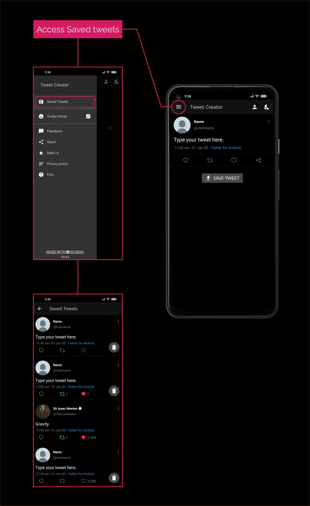

FAQ Tweet Creator
How to switch theme ?
Switching theme
For switching between dim, dark and light mode of app, touch the Sun or Moon icon on the toolbar, then choose any desired theme.
How to toggle emojis ?
Toggling between twitter and system emoji
- Tap on the hamburger icon on the top left corner.
- Tap Twitter emoji in the navigation menu.
- Accept the confirmation that you want to restart the app. Note: Changing emoji requires app restart.
How to toggle tweet options ?
Toggling tweet options
Tap 3 dots on the top right of the tweet.
How to select saved user for tweet?
Selecting saved tuser for main tweet
- Open more options menu by clicking on 3 dots.
- Tap Select user in the menu.
- Choose any user from the list by tapping on the user profile.
How to add users to the user list?
Adding user to the user list
- On the home screen, Touch the human icon 🤵.
- At bottom of the screen, Touch the ADD USER button.
- Enter all the asked details, on the next screen
- Name
- Username
- Select image
- After entering all details, Tap the Add User button.
How to edit users in the user list?
Editing user in the user list
- On the home screen, Touch the human icon 🤵.
- Tap on any user in the user list.
- Edit any detail of the user and tap Edit User
How to delete users from the user list?
Deleting user from the user list
- On the home screen, Tap the human icon 🤵.
- Left swipe any user to delete it from user list.
How to retweet ?
Retweeting
- Open more options menu by tapping on 3 dots.
- Turn on Retweeted text.
- Tap on You retweted for changing user.
How to change retweet count?
Changing retweet count
- Open more options menu by tapping on 3 dots.
- Turn on Retweet count.
- Tap on retweet count.
- Enter any desired count and save.
How to change like count?
Changing like count
- Open more options menu by tapping on 3 dots.
- Turn on Like count.
- Tap on like count.
- Enter any desired count and save.
How to reset tweet?
Resetting tweet
- Open more options menu by tapping on 3 dots.
- Tap on Reset Tweet.
NOTE: Resetting a tweet doesn’t delete it, you have to manually delete these resetted tweets from saved tweets section.
How to access Saved Tweets?
Opening Saved Tweets
- Tap on the hamburger icon on the top left corner.
- Select Saved Tweets from the navigation menu.
- Tap on any saved tweet to edit it or delete it using the dustbin icon.

How to add quote tweet?
Adding Quote tweet.
Tap share icon of the main tweet for accessing quote tweet menu and Enable Quote tweet.
How to select saved user for quote tweet?
Selecting saved user for quote tweet
- Tap the share icon of the main tweet for accessing quote tweet menu.
- Enable Quote Photo.
- Tap Select User.
- Choose any user from the list.
How to add image in quote tweet?
Adding images to Quote tweet.
- Tap the share icon of the main tweet for accessing quote tweet menu.
- Enable Quote Photo.
- Choose any image from your device.
How to reset quote tweet?
Resetting quote tweet.
- Tap the share icon of the main tweet for accessing quote tweet menu.
- Tap on Reset Quote Tweet.
How to add replies ?
Adding replies
Touch the comment icon for adding reply to the tweet.

How to highlight likes and retweets icons in replies?
Highlighting likes/retweet icons.
Tap on like/retweet icons for highlighting them.
How to toggle reply options?
Toggling reply options
Tap 3 dots on the right of the reply, for accessing the reply options menu.
How to select user for reply?
Selecting user for reply
- Open reply options menu by tapping on 3 dots of the reply.
- Tap on Select User.
- Select any user from the list by tapping on it.
How to change comment count of reply?
Changing reply comment count
- Open reply options menu by tapping on 3 dots of the reply.
- Tap on Comment count.
- Enter any desired comment count and save.
Tip: You can enter 0 or leave count blank for disabling comment count.
How to change retweet count of reply?
Changing reply retweet count
- Open reply options menu by tapping on 3 dots of the reply.
- Tap on Retweet count.
- Enter any desired retweet count and save.
Tip: You can enter 0 or leave count blank for disabling retweet count.
How to change like count of reply?
Changing reply like count
- Open reply options menu by tapping on 3 dots of the reply.
- Tap on Like count.
- Enter any desired like count and save.
Tip: You can enter 0 or leave count blank for disabling like count.

How to delete a reply?
Deleting a reply
- Open reply options menu by tapping on 3 dots of the reply.
- Tap on Delete for deleting a reply
How to create a reply thread?
Creating reply thread.
Touch reply icon of the reply for creating a reply thread.
How to toggle options for replies in reply thread?
Toggling reply options in reply thread
Tap 3 dots on the right of the reply, for accessing the menu for replies in reply thread.
How to delete a reply in reply thread?
Deleting a reply in reply thread
- Open reply options menu of replies in reply thread, by tapping on 3 dots of the reply.
- Tap on Delete for deleting a reply in reply thread